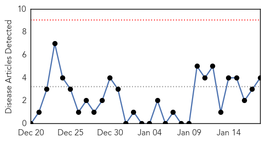
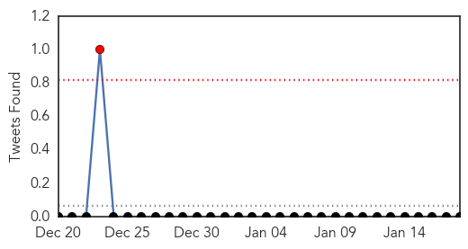
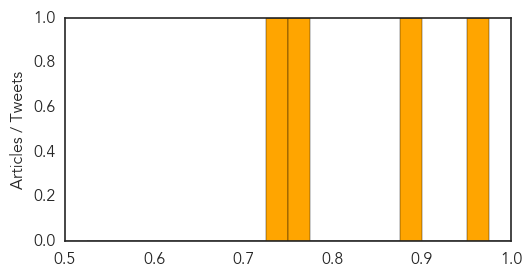

Influenza
30-Day Web Trend
1 alerts, 0 warnings

30-Day Twitter Trend
1 alerts, 0 warnings

Article Locations

Article Confidences
Top Articles:
- 0.996
- Seek treatment for flu symptoms
- 0.993
- KHC urges importance of flu vaccination
- 0.990
- From an uncertain process of guesses and science, each year’s flu vaccines emerge
- 0.980
- Flu vaccines: a mixture of hard science and good fortune
- 0.968
- Boston reports 1st influenza related death
- 0.929
- Bird Flu: Lagos kills 2,000 birds
- 0.896
- Surrey hospital sees ‘unprecedented’ congestion due to C. difficile
- 0.867
- Egypt human H5N1 bird flu total now at 17
- 0.605
- BCNU on hospital overcrowding: ‘This is not safe patient care'
Top Tweets:
-
No tweets found for Jan 18, 2015
Dengue Fever
30-Day Web Trend
0 alerts, 0 warnings

30-Day Twitter Trend
1 alerts, 0 warnings

Article Locations
Article Confidences
Top Articles:
Top Tweets:
-
No tweets found for Jan 18, 2015